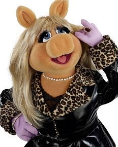
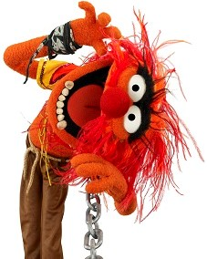

Meet the Band
Miss Piggy
After winning her town talent show at the ripe age of 10, Miss Piggy knew she had a passion for music. She continued to apply herself through her teenage and young adult years until she made waves on a world wide stage with her hit single, 'My Kermie'. After a 5 year stint doing a solo project, she reunited with the love of her life for a band project that took on a life of its own. In her spare time, she enjoys painting her nails, traveling to different countries, and spending time with her Kermie.
Kermit

Kermit started his journey in his middle school chorus class. After earning a few solos and performing in some shows in high school, he started his own band with a few friends from the chorus. His first project, The Guys on the Street, earned a record deal and produced some albums. But after reuniting with his love Miss Piggie, and bringing in his drummer from the previous project, he has reached untouched heights in the field of music. In his spare time, he likes sipping tea, reading the paper, and spending time with Miss Piggy.
Animal
No one, not even Kermit or Miss Piggy know where Animal came from. He is a true enigma and part of what gives this band its mysterious feel. When asked about music, he just says 'Animal like bang the drum!' I guess that'll have to do for now...